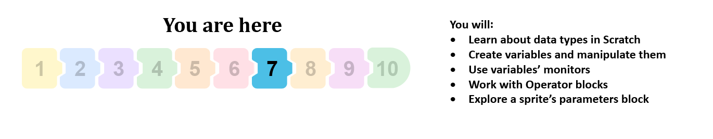
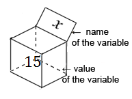
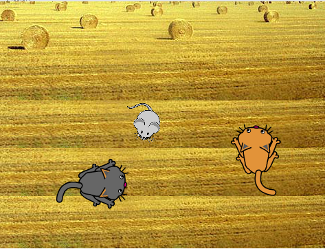
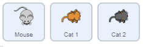
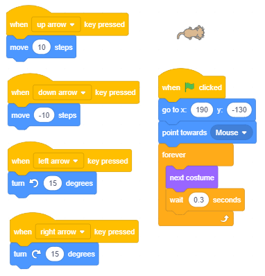
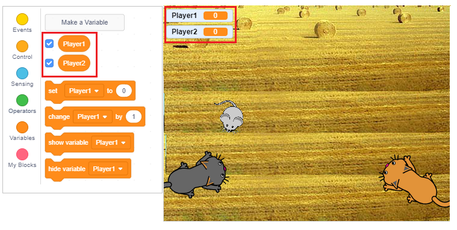
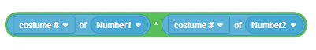

Променливи¶

Променливите са едно от най-важните понятия в програмирането. В този урок ще се запознаем с различни видове променливи и ще покажем как можем да наблюдаваме промените на техните стойности на сцената. Ще използваме примери на проекти със скриптове, които имат сложна структура, за да покажем как можем да създаваме конкурентни игри, къде трябва да поддържаме оценките, както и как да формираме сложни изрази, изчисляващи стойността на променливите.
Какво е променлива?
Променливата е определена област от компютърната памет. Можем да кажем, че променлива е като присвоено поле, в което програмата временно съхранява данните, с които работи в момента.
{kind=link}
Променливата на фигурата по-горе е наречена Х, а текущата й стойност е 15.
Променливата може да съхранява една стойност, например число или буква. Това са прости променливи. Съществуват обаче и сложни променливи, които съхраняват множество стойности, например поредица от букви (низ), серия от числа, думи, … В Scratch този низ се нарича списък.
В предишни проекти използвахме неназовани стойности. Текстът “Hello World” и други, които въведохме в блоковете Say и Think, са всички данни - низове (серия от знаци).
Числата, които въведохме като аргументи в команди за движение (движение, точка в посоката, промяна по) са стойности, които могат да бъдат зададени в променливи.
Условието за повторение и разклоняване може да има две стойности - вярно и невярно; следователно това също е стойност, логическа стойност.
За по-сложни програми ще трябва да зададем определени стойности, т.е. да въведем променливи.
Как да създадете променливи?
В началото няма блокове в групата Променливи (изображение A). Първо, трябва да създадете променлива, като щракнете върху опцията Направи променлива.

Щраквайки върху този бутон, ще отворите диалогов прозорец за създаване на нова променлива (B).
Променливата може да бъде локална, добавена само към активния обект (спрайт или етап) или глобална.
Глобална променлива може да се използва от всички обекти в проекта. Когато въведете името на променливата и щракнете върху бутона OK, в палитрата с блокове (C) ще се появят блокове за четири команди и един репортер с името на променливата върху нея и квадратче до нея.
Блоковете, които представляват променливите, се наричат *репортери*, защото отчитат текущата стойност на променливата. Репортерите се появяват в две различни форми и те могат да бъдат зададени само в полета за въвеждане на командни блокове със съответните форми.
Репортерите със заоблени ръбове (елипса) съхраняват номера или низове и те могат да бъдат вмъкнати в блоковете с бели заоблени полета за въвеждане.
Шестоъгълните репортерски блокове съдържат логически данни (верни или неверни) и те могат да бъдат вмъкнати в блокове с подходящо оформени полета за въвеждане.
Някои репортерски блокове също имат отметки. Ако потребителят кликне на квадратчето, на сцената ще се появи монитор и той ще покаже текущата стойност на променливата. Мониторът може да показва стойностите на променливите в много различни формати, показани на следващата фигура.

малък дисплей на стойността с името на променливата,
голям дисплей на стойността без името,
с плъзгач, който дава възможност на потребителя да промени стойността на променливата.
Форматът може да се промени, като щракнете два пъти върху монитора. Форматът на плъзгача може да се използва само за променливи, създадени от потребителя. Като щракнете с десния бутон върху плъзгача, можете да зададете минимални и максимални стойности.
 Study the following examples¶
Study the following examples¶
Example 1 - Изучете следните примери¶
Този проект е игра, направена за двама играчи. Всеки играч използва клавиатурата, за да контролира движението на своя котешки спрайт, който гони мишка, която се появява в произволно избрани позиции на сцената. Играчът, чиято котка докосне мишката, първо получава точка. Когато една от котките докосне мишката, тя изчезва и се появява някъде другаде. Първият играч контролира жълтата котка с клавишите със стрелки, а вторият играч контролира сивата котка с клавишите W A S D.
Въвеждаме сложни условия и логически операции.
Създаване на фона и спрайтовете
В този проект има три спрайта - Cat 1, Cat 2 и Mouse и един фон. Ще създадем фона, като леко модифицираме фона Hay field фона от библиотеката Scratch.
{kind=link}
Sprite Cat1 е създаден от справка Cat 2 от справочна библиотека, която е добавена за повече един костюм, а Cat 2 е създадена чрез копиране на Cat 1 и промяна на цвета. Третият спрайт беше качен от интернет и той има само един костюм, тъй като няма нужда да оживява движението му в проекта.
{kind=link}
Поведението на спрайтa Cat 1
Първо ще напишем и тестваме скриптите, които ще добавим към спрайта Cat 1, след което ще дублираме този спрайт и ще променим леко скриптовете.
{kind=link}
В началото спрайтът е насочен към мишката и играчът може просто да използва клавиша ↑, за да стигне до мишката и да спечели първата точка. По-късно в играта играчът ще трябва сам да води котката към мишката, като използва клавишите със стрелки ← и →, които се използват за завъртане на спрайта на 15 градуса наляво и надясно. Понякога играчът може да използва клавиша ↓, за да премести спрайта назад. За спрайт Cat 2, навигационните скриптове са еднакви, само ключовете, използвани за преместване на спрайт, са различни. Ключът W придвижва спрайта напред, а A и D се използват за завъртане на спрайта на 15 градуса наляво и надясно. Сценарият, който стартира програмата, също е почти същия; единствената разлика е, че друг спрайт се изпраща в долния ляв ъгъл, т.е. той се изпраща до точката, която има координатите (-190, -130).
Поведението на спрайта на мишката
Следващата фигура представя скрипта, добавен към спрайта на мишката. В началото мишката се поставя на произволно избрано място. След това той влиза в безкрайно повторение (завинаги цикъл) на следните действия.
Програмата изчаква, докато една от котките докосне мишката,
Мишката се скрива и отново се появява на друго произволно избрано място.
(в рамките на цикъла, мишката може да се появи както в горния, така и в долния ръб на етапа, защото сега интервалът за стойността на координатата * у * е [-150, 150])

Формиране на сложно състояние
Условието в командата  се състои от две условия: Cat 1 докосва мишката или Cat 2 докосва мишката.
се състои от две условия: Cat 1 докосва мишката или Cat 2 докосва мишката.
Създава се сложно условие, както следва.
От групата Оператори ще изберем подходящата операция - в нашия случай логическата операция или .
Поставяме подходящите условия в празните шестоъгълници,

Накрая поставяме това сложно състояние в блока „изчакайте до“.

Надграждане на проекта
Ще надстроим този проект, като въведем 2 променливи: Играч 1 и Играч 2, които ще съхраняват точките на играчите. Всеки път, когато някоя от котките докосне мишката, играчът, контролиращ тази котка, ще спечели точка. Това ще се съхранява в скрипта, добавен към спрайта на мишката. Точките на играчите ще бъдат показани на екрана. Ще въведем и таймер, който ще спре играта след изтичане на определеното време. Победител е играчът, който има повече точки.
За да можете да проследявате точките на играчите, трябва да се проверят и двете променливи Играч 1 и Играч 2 и техните монитори трябва да бъдат показани в първия формат.
{kind=link}
В началото на скрипта, добавен към мишката, трябва да зададем началните им стойности на 0. Всеки път, когато котка докосне мишката, броят точки трябва да се увеличава. Следователно, скриптът на мишката има следния вид.

Това, което остава, е да се определи срокът за играта. Можем да направим това, като зададем стойността на променливата Time, разположена в скрипта, задействан чрез щракване върху зеления флаг, до желаното число, например, 120 секунди. Тогава ще поставим командата  в цикъла, който ще бъде повторен 120 пъти и намалете стойността на променливата с 1.
Ще добавим командата
в цикъла, който ще бъде повторен 120 пъти и намалете стойността на променливата с 1.
Ще добавим командата  след цикъла и прикрепете този скрипт към спрайта на мишката.
след цикъла и прикрепете този скрипт към спрайта на мишката.

Пример 2 - Играта “Лабиринт”¶
В проекта Лабиринт, целта е да се получи спрайт Мишка 1 чрез сложен лабиринт. Изходът е разположен в горната част на сцената, така че условието за успешното завършване на играта е координатата на спрайта да е по-голяма от 180. Спрайтът се управлява с клавишите със стрелки. Ако спрайтът докосне някоя от стените, които са черни, той ще се върне в изходна позиция.
В нашия ремикс движението на мишката ще се контролира по-точно. С натискане на клавиша със стрелка веднъж спрайтът ще се движи само 3 стъпки (а не 10 като в оригиналния проект). Докосването до стената няма да бъде санкционирано с връщане към старта, спрайтът ще отскочи само от лабиринтната стена (движейки се -2 стъпки), както в проекта лабиринт стартер. Тъй като мишката често докосва стените с опашката си, ние отрязваме опашката му (в редактора на цветове, първо изберете опашката с помощта на инструмента reshape и след това я изтрийте с натискане на клавиша Del).
Модифицираните скриптове, прикрепени към спрайта на мишката, са представени на фигурата по-долу.

Играта обаче няма да е по-лесна, защото мишката ще трябва да избягва враговете си: 2 отровни топки и призракът на лабиринта.

Топките, подобно на мишката, отскачат от стените на лабиринта, докато призракът може да премине през стените.
Мишката има 100 енергийни единици в началото, което намалява с 5 всеки път, когато удари лабиринтната стена, т.е. и ако врагът докосне мишката, това е още по-опасно. Ако топка я докосне, тя ще загуби 10 енергийни единици, а ако призракът я докосне, тя ще загуби 50.
Играта завършва успешно, ако мишката стигне до изхода на лабиринта, и се проваля, ако в лабиринта му липсва енергия.
Поведението на топката
В началото на играта топката е скрита. Появява се след 1 до 5 секунди от началото на играта, координатите на Ball 1 са (-120,0), а на Ball 2 (165,55).

Поведение на призрака
Призракът също е скрит в началото на играта. Появява се след 5 до 10 секунди. Докато не докосне мишката, тя се плъзга за 5 секунди до произволно избрана позиция в горната половина на лабиринта. Ако докосне мишката, тя ще намали броя на нейните енергийни единици с 50 точки, след това ще се скрие и след 5 до 10 секунди ще повтори описаното по-рано движение.

Проект 3 - „Познай моето числ
Кралят в Царството на Осмиците имал 8 дъщери. Когато дойде време любимата му дъщеря, най-малката принцеса, да се омъжи, той попита какъв мъж би искал да бъде нейният съпруг.
Принцесата решила, че ще се омъжи за умен млад мъж, който може да реши всички загадки, които поставя пред него.
Първият пъзел беше да отгатне, като зададе възможно най-малко въпроси, какво е числото от 1 до 100, което тя е намислила.
Ако той зададе някакви въпроси, тя ще отговори: Моето число е по-малко, Моето число е по-голямо или Добре направено, познахте.


Надстрой проекта Познай моето число 2
Принцесата беше казана от нейния учител по математика, че чрез задаване на интелигентни въпроси пъзелът може да бъде решен в максимум 7 опита, така че принцесата реши, че ще преминат само кандидати, които решават пъзела в 7 и по-малко опити.
За да създадем проект, в който принцесата ще провери дали кандидатът предположи правилно и колко опити са му били нужни, за да отгатне правилно, ще трябва да създадем още една променлива, наречена опит. Стойността на тази променлива ще се увеличи с 1 след като потребителят зададе всеки въпрос.
По този начин, когато излезем от цикъла, в който търсим отговор, ще имаме запис на броя на опитите. Принцесата ще каже след колко опити кандидатът отгатна нейния номер и след това, ако имаше по-малко от 8 опита, тя ще каже Това означава, че сте играли разумно и ако броят на опитите е равен или по-голям от 8, тя ще каже Това означава, че не сте решили пъзела по най-добрия възможен начин.

Следващият пример може да бъде използван като образователна програма за деца в предучилищна възраст и ученици в началното училище, които се учат да броят с помощта на компютърни игри. Подходящ е, тъй като чрез надграждането и програмирането му малко по-възрастните ученици са в състояние да получат идеи как да решат по-сложни математически задачи.
Пример 4 - Проект “Млад математиꔶ
В една вълшебна земя има четири спрайта млад магьосник Математик, Число1, Число2 и Знак, използван за аритметични операции. Всяко Число има 3 костюма във формата на числа, подредени в строг ред: 1, 2, 3. Знакът има два костюма във формата на знаци, използвани за аритметични операции: * и +.

Числата и Знак обичат да играят игра, наречена Примери: всеки път, когато потребителят натисне бутона Задаване на задача, те на случаен принцип избират костюма си, например когато някой хвърли монета. Въпреки това Числата и Знак се променят, Математика ги добавя и умножава, без да прави грешка.
Не се знае точно кой магьосник го е научил на това, но се казва, че Математикът търси майстор, който би го научил да дели и изважда.
Тайната на Математика е, че освен че има име и изображение, всеки костюм има и пореден номер. Това е обикновено число, с което могат да се извършват математически операции. Математика просто трябва да разбере кой пореден номер костюм за всеки Номер и Знак е избран в примера.
Тъй като вече видяхме, че репортерите знаят всичко, Математика може просто да вземе един от репортерите от групата Sensing, разклоняващия се блок if then от групата Control, логическият оператор за равенство и математически оператор за умножение и добавяне на числа от групата Оператори.
В първата версия на проекта потребителят натиска бутона imagine, за да зададе задачата, а младият съветник го решава.
Създаване на спрайтове
Ще изберем спрайт Wizard Boy за наш основен спрайт, а за Number1 ще изберем спрайт 1-Glow от библиотеката със спрайтове. След това в раздела Костюми ще въведем още два костюма за спрайт Number1, първо 2-Glow и след това 3-Glow. Спрайтът Number2 ще бъде създаден чрез дублиране на спрайт Number1. И двата костюма за спрайт Sign се нарисуват в редактора на цветове (кръг за умножение и знак + за добавяне). Ще създадем и бутона Помислете за задача, като използваме спрайт бутон-3, а на първия си костюм ще добавим текста „Мислете за задача“.

Сценарият за скриптове и спрайтове
Младият магьосник е разположен от лявата страна на екрана, а от дясната страна има Number1, Sign и Number2. Бутонът Помислете за задача се намира в долната част на екрана. Програмата стартира, когато се натисне бутона Мислете за задача. Щракването върху бутона излъчва съобщението „задача“. Всеки спрайт има своята реакция на посланието: математикът мисли “Хммм …”, докато числата и въздишката реагират, като се появяват на сцената в произволно избран костюм. Когато щракнете върху спрайта на математика, се показва балонче от комикс с резултата от дадената операция. Спрайтовете Number1, Number2 и Sign имат само по един скрипт - реакция на събитието Когато получа съобщението със задачата само с една команда - Сменете костюма с произволно число от 1 на 3 (1 до 2 за знака). Спрайтът Бутон реагира само при щракване. След това променя костюма (така че знаем, че е щракнат) излъчва съобщение, изчаква половин секунда и се връща към първоначалния вид. Сценариите, свързани с числата и бутона, са показани на следната фигура.

Скриптите, които описват поведението на справителя на математика, когато той получава съобщението „задача“ и когато потребителят кликне върху него, са показани на следната фигура.

Нека разгледаме втория скрипт, свързан с спрайта на математика. Когато щракнем върху спрайта, той мисли за отговор и ето как прави това. Както вече споменахме преди, знакът може да се появи в един от двата костюма: първият костюм - костюмът, който съответства на поредния номер 1, е за умножение, следователно, ако произволно генерираното число е 1, математикът ще има да умножим числата.
Ако числото 1 не е генерирано за спрайт-знак, математикът ще трябва да добави числата. По същия начин номерата на костюмите за Число1 и Число2 съответстват на числата, които спрайтът на математика трябва да използва за извършване на дадената операция. Използвахме оператора join за текста, който се появява в балона на комиксите. Командата на оператора  е една от командите на оператора, която може да бъде изпълнена на типа данни, наречен низ (серия от знаци).
Тази команда взема два отделни низа от символи и прави един низ, който съдържа всички знаци от двата низа, където символите на втория низ се добавят в края на първия низ. Например, пускането на блоковете на фигурата вляво ще има следния резултат. Ако отговорът на въпроса “Как се казваш?” е “Никола”, спрайтът за котки ще каже “Здравей Никола”.
е една от командите на оператора, която може да бъде изпълнена на типа данни, наречен низ (серия от знаци).
Тази команда взема два отделни низа от символи и прави един низ, който съдържа всички знаци от двата низа, където символите на втория низ се добавят в края на първия низ. Например, пускането на блоковете на фигурата вляво ще има следния резултат. Ако отговорът на въпроса “Как се казваш?” е “Никола”, спрайтът за котки ще каже “Здравей Никола”.
{kind=link}
Как се вмъкват функционални блокове в други функционални блокове?
В нашия скрипт, който добавихме към математика, ние поставяме оператора join в аргументния блок на командата think of. В първото поле за въвеждане на оператора се присъединяваме към текста “Отговорът е”, а във второто поставяме оператора * (умножение) или + (добавяне). След това въведехме номера на костюма на спрайт Number1 в първото поле за въвеждане на блока, изпълняващо аритметичната операция, а във второто поле за въвеждане въведехме номера на костюма на спрайта Number2. Това обяснение достатъчно ясно ли е?
Ако все още не сте сигурни как да направите това, вижте по-подробно обяснение.
В главата Цикли направихме класификация на блоковете, използвани в Scratch и посочихме, че в така наречените Command блокове се вмъкват така наречените функционални блокове. Докато започваме да създаваме по-сложни проекти, ще трябва да използваме по-сложни функционални блокове, които са съставени от няколко други функционални блока, както в примера, който описваме тук. Ето защо ще използваме изображения, за да покажем стъпка по стъпка как се създава сложният блок от аргументи мисли за. Правейки това, ние ще вървим назад, от края до началото. Трябва да получим:
Трябва да получим
Как да полуучим
 и
и  ?
?
а) Вземаме блока  от групата Sensing.
от групата Sensing.
От списъка с спрайт, който получаваме, когато щракнем върху триъгълника до спрайт Математик, ще изберем Число1 (т.е. Число2)
От списъка с променливи, добавени към този спрайт, който получаваме, когато щракнем върху триъгълника до променливата поставете x, ще изберем номер на костюма

Как можем да получим 
а) Вземаме блока  от групата Operators
от групата Operators
Поставяме първия аргумент, който получихме от описание 1, в първото поле

Ние поставяме втория аргумент, който получихме от описание 1, във второто поле
Как можем да получим

а) Вземаме блока от групата Operators
Пишем в текста “Отговорът е” в първото поле

Въвеждаме аргумента, който формираме от описание 2, във второто поле
Накрая, аргументът, формиран по този начин, ние поставяме в полето на блока

Първо надграждане
Ако искаме проектът да използва числата от 1 до 9, трябва да добавим костюмите с числата от 4 до 9 към спрайтите Число1 и Число2 (числата от 4-Glow до 9- Glow последователно) и в техните скриптове, в командата смяна на костюм с произволно число трябва да поставите „1 до 9“ вместо „1 до 3“.
Второто надграждане
Можем да надстроим проекта, така че след получаване на съобщението задача, младият съветник да зададе на потребителя подходящия въпрос и след това да излъчи дали отговорът е правилен или не. В тази версия на проекта не е необходимо да се обработва събитието кликнете върху спрайта, добавен към спрайта на математика. Трябва да се добави и инструкция за начина на използване на програмата. Това може да се постигне с въвеждането на още един бутон, върху който можем да напишем думата Инструкция. Когато се натисне този бутон, той излъчва съобщение; както фонът, така и математичният спрайт трябва да реагират на това съобщение. Фонът ще се промени в Backdrop2, на който е написана инструкцията и математикът се свива до 30% от размера си, за да не покрие инструкцията.

Трето надграждане
Ако искаме програмата да изпълнява аритметичните операции на изваждане и деление, проектът ще стане по-сложен. За да направим това надстройка, трябва да добавим още два костюма към спрайт Sign - за изваждането и : за делението. Трябва да променим и скрипта, който описва поведението на математика, когато потребителят щракне върху него.

Предполага се, че потребителят е запознат с понятието отрицателни числа. Когато става въпрос за делението, трябва да гарантираме, че резултатът е цяло число и да избягваме делението на нула. За да избегнем потенциалните проблеми, когато става въпрос за разделяне, ако избраната операция, която е генерирана на случаен принцип, се случи разделяне, ще излъчим съобщението разделяне, докато за всички останали операции ще използваме същото решение, приложено в предишните версии от проекта.

Следователно, когато се натисне бутона Помислете за задача, той излъчва съобщението “задача”, и “Математикът”, и “Знакът” реагират на това съобщение. Математикът мисли “Хммм …”, а Знакът генерира произволно число от 1 до 4 и се появява в съответния костюм (1 - умножение, 2 - събиране, 3 - изваждане, 4 - деление).
За всички операции, с изключение на разделението, спрайтът Sign ще излъчва съобщението “regular”. Ако е избрано делението, спрайтът ще излъчи съобщението „раздели“, което ще задейства скрипт за изчисляване на коефициента на две числа, който завършва с излъчване на съобщението „разделяне“. Sprites Number1 и Number2 реагират на съобщенията, изпратени от спрайта Sign.
Спрайтове Number 1 и Number 2 реагират на съобщението “regular” по същия начин, по който реагираха в предишните версии на проекта, т.е. те се появяват в един от избраните на случаен принцип костюми от 1 до 9. Ако обаче разделението беше избрано на случаен принцип, задачата ще бъде поставена по различен начин, програмата преминава от резултата към числата, които я произвеждат. В процедурата Разделяне от интервала [1,9] се генерират две произволни числа. Първото число е присвоено на променливата коефициент, а второто на променливата делител. Резултатът от умножението на тези две числа е променливата дивидент.
Стойността на променливата дивидент се присвоява на спрайта Число1, а стойността на променливата * делител * на спрайта Число2. TПо този начин, когато дивидентът е разделен на делителя, математикът със сигурност ще получи цяло число в интервала [1,9].

Ще използваме този метод за генериране на задачи, от резултати до операнди и в други проекти. По този начин можем да гарантираме, че на потребителя е предоставена задача, която той може да реши, например, да не получава отрицателни числа при изваждане на числата или да получи резултат по-голям от 50 при извършване на умножение и че факторите могат да бъдат по-големи числа, и подобни.
Новият проблем, когато задачите се решават по този начин, е, че дивидентът вероятно ще бъде двуцифрено число и може също да завърши на нула, което не беше включено в костюмите за спрайта Number1 в предишните версии на проекта. Това може да бъде разрешено чрез въвеждане на още един спрайт, дубликат на спрайт Номер1, който ще наречем Десетки и добавяне на числото нула като десети костюм към Число1. Разбира се, спрайтът Десетки е скрит и се появява на сцената само ако спрайтът Знак излъчва разделяне на съобщението, а изчисленият по-рано дивидент е двуцифрено число (което ще бъде открито от променливия брой цифри) , Това се случва, когато от десетки (цифрата в десетките места на дивидента) се появява от лявата страна на спрайт Number1, която получава стойността на единицата цифра на дивидента.
За да извлечем цифрите от дивидента, използваме операцията  , която извлича символа със съответния пореден номер от низ.
, която извлича символа със съответния пореден номер от низ.
Тъй като Scratch извършва автоматично преобразуване на данните от числови в низ и обратно, цифрите на многоцифрени числа са просто разделени от тази операция и не е необходимо да се обяснява какво е цяло деление, нито коя операция връща остатък от цяло число. Следващите фигури представляват скриптове, добавени към спрайтовете Number1, Number2 и Sign.

 Разбра ли?¶
Разбра ли?¶
{kind=link}
Въпрос 2¶

Каква е стойността на променливата а след изпълнението на командите:
Въпрос 3¶

Каква е стойността на променливата y след изпълнението на командите:
Въпрос 4¶

Каква е стойността на променливата y след изпълнението на командите:
Въпрос 5¶
- с е помощна променлива.
- а е спомагателна променлива, b и C обменят стойностите.
- Ако b = 0, разделението не е дефинирано.
Q-83: Коя от следващите серии команди обменя стойностите на променливите a и b? (Изберете всички верни отговори)

Въпрос 6¶
- 6 и 6
- 3 и 3
- Условието за разклоняване е изпълнено; следователно, началната стойност на променливата се увеличава.
- 6 и 3
- 3 и 6
Q-84: Какво ще каже спрайтът след изпълнението на командния стек a) и какво след стека b)?

Въпрос 7¶

- a=5
- Неправилно е, че 5 <5, условието за разклоняване не е изпълнено.
- a=0
- 0<5.
- a=10
- Неправилно е, че 10 <5, условието за разклоняване не е изпълнено.
- a=4
- 4<5.
Q-85: За кои стойности на променливата а променливата b ще получи стойността 1? (Изберете всички верни отговори).
Въпрос 8¶
- a=5 b=10
- 5<10.
- a=0 b=-1
- Тъй като 0> -1, условието за разклоняване не е изпълнено.
- a=10 b=5
- Тъй като 10> 5, условието за разклоняване не е изпълнено.
- a=4 b=4
- Тъй като 4 = 4, условието за разклоняване не е изпълнено.
Q-86: За кои стойности на променливите а и b променливата min ще получи стойността на променливата a? (Изберете всички верни отговори).

Въпрос 9¶

Каква ще бъде стойността на променливата a след изпълнението на командата за условие, ако стойностите на променливата a и b са били преди: a = 4 и b = 2?
Въпрос 10¶
- да
- За а = 0 първата команда присвоява стойността 5 на променливата b, а втората команда - стойността 2.
- не
Q-87: Тези две команди за условно разклоняване изпълняват ли винаги една и съща работа?

Въпрос 11¶

- b=5
- b=2
- Условието за разклоняване е изпълнено; началната стойност на променливата се увеличава.
- b=6
- b=3
Q-88: Каква ще бъде стойността на променливата b след изпълнението на командата за условие, ако стойността на променливата b преди това е b = 2?
- b=5
- b=2
- b=6
- Условието за разклоняване не е изпълнено; следователно началната стойност на променливата не се променя.
- b=3
Q-89: Каква ще бъде стойността на променливата b след изпълнението на командата за условие, ако стойността на променливата b преди това е b = 3?
Въпрос 12¶

-
Q-90: Като плъзнете правоъгълниците, съпоставете първоначалните стойности на променливите със стойности, получени след изпълнението на условната команда.
Try again
- a=2 b=1
- a=2 b=5
- a=2 b=-2
- a=-5 b=-2
- a=-2 b=1
- a=-2 b=5
- a=-2 b=-1
- a=-5 b=-1
 Опитай!¶
Опитай!¶
Упражнение 1¶
Напишете серия от команди които:
обменя стойностите на две променливи;
определя кое число е по-голямо между две числа, въведени от входа;
определя минимум три числа, въведени от входа.
Упражнение 2¶
Проверете в Scratch дали следните стекове от команди обменят стойностите на променливите х и у, независимо от първоначалните им стойности.

Какво се случва ако х=0 или у=0?
Упражнение 3¶
Напишете програма, която повтаря следната последователност от стъпки:
спрайтът моли потребителя да въведе естествено число и след това казва
кой номер идва преди,
кой номер идва след,
кое число е двойно по-голямо от стойността и
кое число е половината от стойността на въведеното число.
Повторението трябва да бъде спряно, когато потребителят въведе числото 0.
Упражнение 4¶
Напишете програма, която повтаря следната последователност от стъпки:
спрайтът моли потребителя да въведе две цели числа х и у, които не са нула и след това казва
сумата на числата “х” и “у” е “х + у”,
разликата на числата “х” и “у” е “х-у”,
произведението на числата “х” и “у” е “х * у” и
коефициентът на числата “х” и “у” е “х / у”.
при което вместо променливите, изброени под кавички, той трябва да постави техните стойности.
Повторението трябва да бъде спряно, когато потребителят въведе числото 0 или като стойност на х или у.
Упражнение 5¶
Даден е изразът 16: 8: 4: 2. Каква е стойността на този израз? Напишете го в Scratch и проверете.
Ако добавим две двойки скоби в различни позиции, ще получим изрази, които имат различни резултати. Определете всички възможни стойности, които могат да бъдат получени по този начин.
Напишете всяка възможност в Scratch и проверете резултатите си.
Помощ. Добавянето на скоби ще ви даде следните изрази: ((16 : 8) : 4) : 2
(16 : (8 : 4)) : 2 (16 : 8) : (4 : 2) 16 :((8 : 4) : 2) 16 : (8 : (4 : 2))
 Отстранете грешката!¶
Отстранете грешката!¶
Грешка 1¶
- Question
Студентът искаше да промени поведението на котката в проекта “Ловът”. Той / тя искаше котката да обикаля в кръг всеки път, когато докосне мишката (тя се движи 1 стъпка и се завърти на 1 градус 360 пъти). Ученикът добави следните скриптове към спрайта за котки, но когато проектът беше тестван, котката не се обърна, когато докосне мишката. Къде е бъгът?

Отговор:
Състоянието се проверява едва след щракване върху зеления флаг. Трябва да се проверява постоянно и това означава, че условната команда трябва да бъде поставена в безкраен цикъл.
Грешка 2¶
- Question
Ученикът искаше да направи по-опростена версия на проекта Maze без променливите, така че той / тя организира спрайта на мишката да се върне в изходна позиция (23, -158), когато докосне стената на лабиринта (докосне цвета черен). Мишката обаче докосна стените на лабиринта, дори когато ученикът не очакваше това да се случи. Къде се обърка студентът?

Отговор:
Спрайтът се движи, преди да бъде насочен в конкретната посока, така че стъпва в посоката, определена от изпълнената преди това команда.
Грешка 3¶
- Question
Тази програма също трябваше да върне спрайта в изходна позиция всеки път, когато докосне стената на лабиринта. Обаче понякога това се случваше, а друг път не беше така. Какво се обърка?

- showtitle
Покажи отговора
- hidetitle
Скрий отгвора
Отговор:
Блокът if then, който проверява дали спрайтът е докоснал стената, е поставен вътре в блок, който проверява дали е натиснат левия клавиш със стрелка и трябва да е след него. По този начин състоянието, прикрепено към спрайта, докосващ се до стената, се проверява само ако спрайтът отиде вляво.
 Обобщение¶
Обобщение¶
В този урок научихме как да създаваме и използваме променливи. Представихме и блоковете от групата Оператори и показахме как можем да създадем сложни функционални блокове. Проектите, които използвахме като примери, имат по-сложна структура - те са съставени от основни елементи на програмната логика. Намирането на логически грешки в този тип проекти не е лесно. Ето защо ще използваме следните уроци, за да покажем начини, по които разработването и тестването на проекти могат да бъдат улеснени чрез разделяне на големи скриптове на процедури - логически части, всяка от които изпълнява една функция.
Нови концепции: променливи - прости, сложни, локални, глобални.
Scratch команди:  -
-  ,
,  , ,
, ,  ;
;  -
-  ,
,  ;
;  - ,
- ,  , ,
, , 
 Създайте проекти¶
Създайте проекти¶
Проект 1 - “Калкулатор”¶
Стартирайте нов проект, в който ще направите калкулатор, който изпълнява основните аритметични операции - събиране, изваждане, умножение и деление. За това упражнение ще ви трябват следните спрайтове: бутон със знака +, бутон със знака -, бутон със знака * , и бутона със знака /.
Освен спрайтовете ще ви трябват и следните променливи: входни стойности x и y и Резултат.
Създайте проекта по следния начин:
Като фон нарисувайте правоъгълник с “КАЛКУЛАТОР”, написан в горния ляв ъгъл.
Създайте всички необходими променливи и ги подредете върху калкулатора.
Качете 4 спрайта, които ще използвате за извършване на аритметични операции и ги подредете върху калкулатора.
За всеки бутон създайте следния скрипт: когато щракнете върху бутона, се извършва съответната аритметична операция.
Тествайте резултата.
Калкулаторът вероятно работи добре, но не е очевидно коя операция е извършена последна.
Следователно сменете калкулатора, така че бутонът, който е бил натиснат последен, променя цвета в червен (това ще означава, че резултатът, видян на сцената, е резултат от тази конкретна операция).
Инструкция: Трябва да създадете втори костюм за всеки бутон. Бутонът в новия костюм трябва да е червен. Когато щракнете върху бутона, скриптът трябва да излъчи съобщението “Нова операция” и след това да се промени към червения костюм. Освен това всеки бутон трябва да има скрипт, който “слуша” за съобщенията, а когато получи съобщението “Нова операция”, трябва да се върне обратно към оригиналния костюм.
Project 2 - Програма базирана на блок-схеми¶
Създайте програма в Scratch, която отговаря на следния алгоритъм.

Определете резултата от изпълнението на тази програма за а = 157; а = 342; а = 529.
Колко цифри ще бъдат в резултата, получен при изпълнение на дадената програма?
Броят на цифрите зависи ли от входната стойност на трицифреното число а?
Редактирайте програмата, така че резултатът винаги да е двуцифрено число.
Проект 3 - “Състезание на автомобил蔶
Стартирайте нов проект, който ще се казва “Car Race”. В този проект ще направите игра за двама играчи. На сцената трябва да има 3 спрайта: 2 коли и порта с надпис “Finish line”. И двата автомобила могат да се движат напред и назад и да се въртят по посока и обратно на часовниковата стрелка.
Контролните клавиши за първата кола са:
Клавиш със стрелка нагоре - Колата продължава напред
Клавиш със стрелка надолу - Колата се движи назад
Ляв клавиш със стрелка - колата се върти обратно на часовниковата стрелка
Десен клавиш със стрелка - Колата се върти по посока на часовниковата стрелка
Контролните клавиши за втората кола са:
W Колата продължава напред
S Колата върви назад
А Колата се върти обратно на часовниковата стрелка
D Колата се върти по посока на часовниковата стрелка
Когато приключите с изработването на скрипта за първата кола, дублирайте я и направете необходимите промени като имената на контролните клавиши и външния вид на втората кола. Финалната линия трябва да се появи на произволно избрана позиция на сцената. Автомобилите, управлявани от подходящи клавиши, се движат към финала. Който докосне първо финала, отбелязва точка. Когато автомобил докосне вратата на финала, той изчезва от сцената и се появява в ново произволно избрано положение (имайте предвид размерите на сцената и координатите на долната лява и горната дясна точка). Сега автомобилите се движат към нова дестинация. Който докосне първо вратата, получава 1 точка. Портата отново изчезва и се появява на ново място … и същото нещо се повтаря. Първият автомобил, който спечели 30 точки, е победителят. Надпреварата е завършена и на сцената трябва да се появи съобщението „Играч 1 е победител“ или „Играч 2 е победител“. За да запазите резултата за всеки автомобил, трябва да въведете променливите Player1 и Player2. За да проследите координатите на портата на финалната линия, трябва да въведете променливите gx и gy.